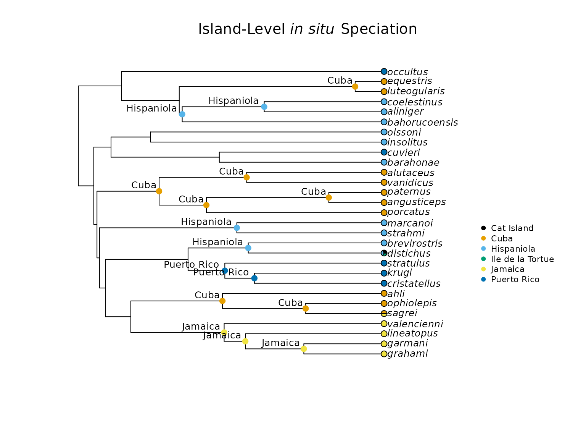
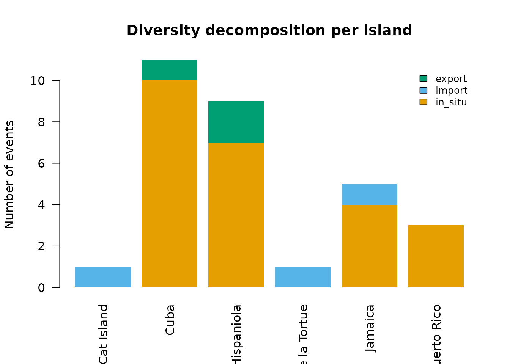
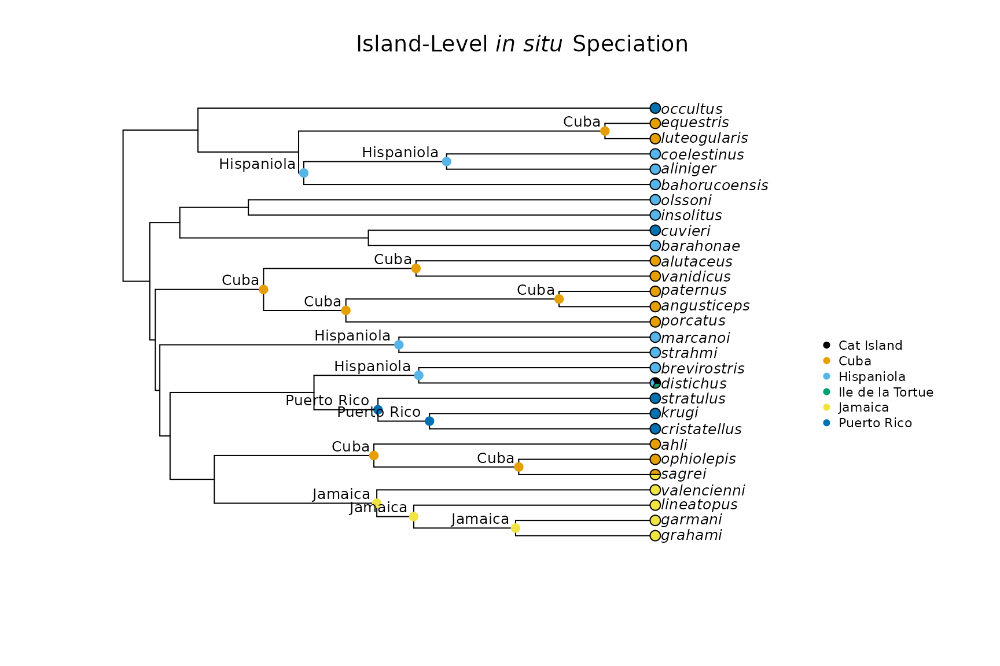

Getting started with insitu
GettingStarted.RmdOverview
The insitu package classifies ancestral nodes on a dated
phylogeny as in-situ speciation, colonization, or dispersal events using
distributional and phylogenetic data. It then provides functions to
partition species richness into its historical components, compute
island-specific indices, and visualize the results.
This vignette covers the core workflow from data preparation through event classification, diversity decomposition, and island ontogeny correction, using 30 Anolis lizard species from the Caribbean Islands as a worked example.
Data preparation
The pipeline requires a time-calibrated phylogeny and a table of
species occurrences with at least two columns: species and
locale. If a species occurs on the mainland, record its
locality as "Mainland". Species must appear in both the
tree and the occurrence table.
library(insitu)
tree <- ape::read.tree(
system.file("extdata/Patton_etal_trimmed.tree", package = "insitu")
)
dat <- read.csv(
system.file("extdata/anolis_dat.csv", package = "insitu")
)prep_phylo handles non-ultrametricity and stores a
sampling fraction correction that downstream rate functions use
automatically. Most empirical trees have small rounding errors that make
them non-ultrametric; this step fixes those before anything else
runs.
tree <- prep_phylo(tree, force_ultrametric = TRUE, sampling_fraction = 1)match_island_phylo prunes the tree to species in the
occurrence data, builds the presence-absence matrix (PAM), and prints a
summary of what was retained and what was dropped. Set
exclude = FALSE to keep mainland outgroup species in the
tree for root anchoring.
matched <- match_island_phylo(phy = tree, locs = dat)
#> ℹ Species dropped from the tree because they were not in the data: transversalis and heterodermus
#> ℹ Species dropped from the data because they were not in the tree: loysiana
#> ℹ Matching complete! Here are the first 5 locales in your data:
#> # A tibble: 5 × 3
#> locale species_list richness
#> <chr> <chr> <int>
#> 1 Cat Island distichus 1
#> 2 Cuba luteogularis, equestris, alutaceus, vanidicus, porc… 10
#> 3 Hispaniola coelestinus, aliniger, bahorucoensis, olssoni, inso… 10
#> 4 Ile de la Tortue distichus 1
#> 5 Jamaica valencienni, lineatopus, garmani, grahami, sagrei 5The matched object is a list with three elements:
$phy (the pruned tree), $PAM (the
presence-absence matrix), and $sp_df (a per-island species
summary). Everything downstream takes matched$phy and
matched$PAM as inputs.
Ancestral state reconstruction
run_geo_asr runs a discrete-state ancestral state
reconstruction for each island in the PAM using ape::ace.
Each island is treated as a distinct state alongside the mainland, so
the reconstruction estimates the probability that each ancestral node
was present on each specific island. The transition model
"ER" assumes equal rates between all state transitions and
is the recommended starting point for most analyses.
asr_insitu <- run_geo_asr(phy = matched$phy, PAM = matched$PAM, model = "ER")The result is a named list of ace objects, one per
island. The StochasticCharMapping vignette covers
simmap_insitu as an alternative that propagates ASR
uncertainty through stochastic character mapping.
Event classification
map_insitu_events classifies each internal node and tip
based on the ancestral reconstruction. A node is in-situ when both it
and its parent reconstruct as the same island above the probability
threshold. When the parent was on a different island the event is
inter-island, and when the parent was on the mainland the event is a
colonization. The default threshold of 0.5 is a reasonable starting
point; the Simulating island radiations vignette shows how
to calibrate the threshold for your own system.
map_events <- map_insitu_events(
recons = asr_insitu,
phy = matched$phy,
PAM = matched$PAM,
threshold = 0.5
)
head(map_events, n = 5)
#> node island ancestor_presence_prob in_situ export import
#> 1 32 Cuba 0.0004768696 FALSE <NA> <NA>
#> 2 33 Hispaniola 0.1330833336 FALSE <NA> <NA>
#> 3 35 Jamaica 0.0267314591 FALSE <NA> <NA>
#> 4 36 Jamaica 0.9837431335 TRUE <NA> <NA>
#> 5 37 Jamaica 0.9977352874 TRUE <NA> <NA>Each row corresponds to one node-island combination. The
in_situ column is TRUE when in-situ speciation
was inferred. The export and import columns
record the source and destination island for each transition, preserving
the directionality of dispersal events for downstream analysis.
Visualization
plot_classified_phylo plots the phylogeny with colored
nodes at in-situ speciation events and pie charts at the tips showing
each species’ island distribution. Colors follow the Okabe-Ito palette
and are consistent across all plotting functions.
plot_classified_phylo(phy = matched$phy, events = map_events, PAM = matched$PAM)
Diversity decomposition
decompose_diversity counts in-situ speciation, import,
and export events per island and computes the proportion of each
island’s richness that derives from in-situ speciation. Import events
are cases where a lineage arrived on an island from elsewhere; export
events are cases where a lineage left.
div <- decompose_diversity(
phy = matched$phy,
events = map_events,
PAM = matched$PAM
)
div
#> island n_species n_insitu n_import n_export prop_insitu
#> 1 Cat Island 1 0 1 0 0.0
#> 2 Cuba 10 10 0 1 1.0
#> 3 Hispaniola 10 7 0 2 0.7
#> 4 Ile de la Tortue 1 0 1 0 0.0
#> 5 Jamaica 5 4 1 0 0.8
#> 6 Puerto Rico 5 3 0 0 0.6plot_diversity_decomposition shows these counts as a
stacked bar chart, making it easy to compare the relative contributions
of in-situ speciation, immigration, and emigration across islands at a
glance.

In-situ speciation index
The in-situ speciation contribution index (ISCI) standardizes in-situ event counts by the total branch length of each island’s subtree, allowing comparisons across islands of different sizes and ages. A higher ISCI means more in-situ speciation relative to the evolutionary time represented on that island.
insitu_speciation_index(phy = matched$phy, events = map_events)
#> island n_insitu island_bl isci
#> 1 Cuba 7 103.02752 0.06794301
#> 2 Hispaniola 4 52.27162 0.07652336
#> 3 Jamaica 3 30.36114 0.09881053
#> 4 Puerto Rico 2 10.15259 0.19699404Node support
insitu_confidence extracts the per-node posterior
probability of island presence for every internal node and every island,
binning each into low (< 0.5), moderate (0.5–0.75), or high (>=
0.75) support. This is useful for sensitivity analyses and for deciding
whether to raise or lower the threshold in
map_insitu_events.
conf <- insitu_confidence(recons = asr_insitu)
head(conf, n = 15)
#> node island prob support
#> 30 30 Cat Island 2.544387e-05 low
#> 31 31 Cat Island 2.446989e-08 low
#> 32 32 Cat Island 3.966199e-09 low
#> 33 33 Cat Island 1.630836e-08 low
#> 34 34 Cat Island 1.326783e-07 low
#> 35 35 Cat Island 1.543357e-06 low
#> 36 36 Cat Island 2.329244e-06 low
#> 37 37 Cat Island 1.358496e-06 low
#> 38 38 Cat Island 2.596481e-06 low
#> 39 39 Cat Island 8.563237e-06 low
#> 40 40 Cat Island 3.607820e-06 low
#> 41 41 Cat Island 1.122414e-04 low
#> 42 42 Cat Island 4.251625e-06 low
#> 43 43 Cat Island 3.806389e-06 low
#> 44 44 Cat Island 1.139486e-02 lowIsland ontogeny
A node classified as in-situ on an island that did not exist at the
time of that node is biologically impossible.
age_correct_events compares each node’s age to the
formation age of the island it is assigned to and flags events that
predate the island.
Island ages for the Caribbean are approximate; the values below are illustrative of the workflow.
ages <- c(
Cuba = 42,
Hispaniola = 50,
Jamaica = 25,
"Puerto Rico" = 46,
"Cat Island" = 10,
"Ile de la Tortue" = 15
)
events_corrected <- age_correct_events(
events = map_events,
phy = matched$phy,
island_ages = ages,
remove_predating = FALSE
)
#> 2 node(s) predate their island's formation age and are flagged.
# Which events predate their island?
events_corrected[events_corrected$predates_island == TRUE,
c("node", "island", "node_age", "island_age")]
#> node island node_age island_age
#> 1 32 Cuba 43.93220 42
#> 3 35 Jamaica 38.75137 25Setting remove_predating = TRUE removes those events and
returns a cleaned table that can be passed directly to
plot_classified_phylo or
decompose_diversity.
events_clean <- age_correct_events(
events = map_events,
phy = matched$phy,
island_ages = ages,
remove_predating = TRUE
)
#> 2 node(s) predate their island's formation age and have been removed.
plot_classified_phylo(phy = matched$phy, events = events_clean, PAM = matched$PAM)
insitu_rate_by_island_age computes the in-situ rate
using island age as the time denominator rather than total path length,
which is the correct denominator when comparing diversification dynamics
across islands of different geological ages. This function requires the
output of age_correct_events as input.
insitu_rate_by_island_age(
phy = matched$phy,
events = events_corrected,
island_ages = ages
)
#> island n_insitu island_age insitu_rate_corrected
#> Cuba Cuba 7 42 0.16666667
#> Hispaniola Hispaniola 4 50 0.08000000
#> Jamaica Jamaica 3 25 0.12000000
#> Puerto Rico Puerto Rico 2 46 0.04347826
#> Cat Island Cat Island 0 10 0.00000000
#> Ile de la Tortue Ile de la Tortue 0 15 0.00000000Literature cited
Patton AH, Harmon LJ, del Rosario Castañeda M, Frank HK, Donihue CM, Herrel A, Losos JB (2021) When adaptive radiations collide: Different evolutionary trajectories between and within island and mainland lizard clades. Proceedings of the National Academy of Sciences 118:e2024451118.
Whittaker RJ, Triantis KA, Ladie RJ (2008) A general dynamic theory of oceanic island biogeography. Journal of Biogeography 35:977-994.